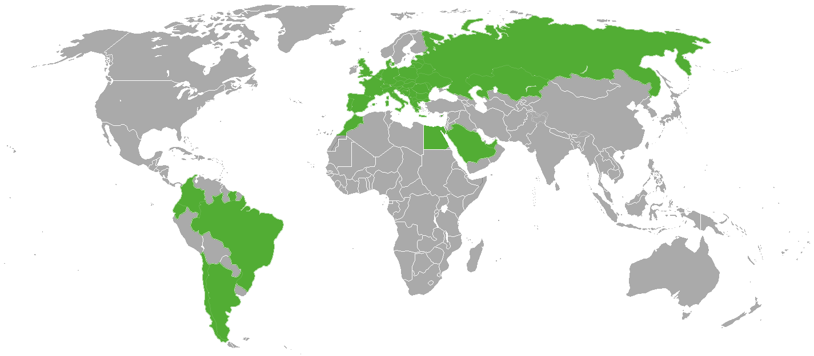

FRUITLEAD is an international company operating throughout Europe, Africa and Asia. We have a network of proven suppliers, which we regularly controll to ensure the continuous development of our products and services that are in line with the expectations of our customers. In Poland, Spain and France, we have permanent employees who personally supervise the entire production, collection, storage and transport process, so we are sure that we will satisfy even the most demanding customers.
